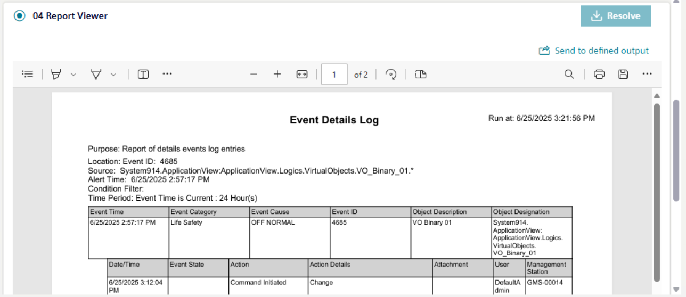

Executing a Report Step in Assisted Treatment

- You are in assisted treatment and the operating procedure includes a report step that you want to do.
- Scroll the steps list, and select the [report step].
- The pre-configured report displays in the report area.
A new report is generated each time when you select the same step. - Select Send to defined output.
- The output report (PDF/Excel) is routed to a file, email, or printer, depending on the output location defined in the report template. The report output indicates the name of the report definition, the type of format, and the execution timestamp.
If the output location is not defined in the report template, then the output files are generated at the default location:[Installation Drive C]:\[Installation Folder]\[Project Name]\ FlexReports. - When the report step is configured with the Execution Mode as Automatic on Creation (automatically as soon as the triggering event occurs) or Automatic on First Treatment (automatically as soon as the operator starts handling the triggering event) then:
-The report output is generated at the location:[Installation Drive C]:\[GMSProject]\Project Name]\data\Reporting\Reports - On selecting Send to defined output then the report output is generated at the location: [Installation Drive C]:\[Installation Folder]\[Project Name]\ FlexReports.
- In Flex Client, when you navigate from the report step to any other configured assisted treatment step or switch to a different tab, then on coming back to the same report step, a new PDF is generated each time at the location: [Installation Drive C]:\[Installation Folder]\[Project Name]\ FlexReports.
- From the report area, you can use the incorporated controls to print to PDF, highlight, zoom in, zoom out, fit to width, page view, or search the content of an alarm printout report.
- Report preview is shown as a PDF.
-If Excel format is configured as output, then Excel is generated in the configured output folder.
-You cannot preview an Excel export. You can only select the corresponding row in the History area and select Send to defined output to download the file locally. - If multiple PDF files are generated for an event that has triggered assisted treatment and the operating procedure includes the report step, then the history area is displayed showing an entry for the report and sub-entries for all individual PDF files.
-You can select the individual PDF files in the History area and the respective PDF gets displayed in the preview area.
After the report is generated, displayed, and sent to defined output, only then the step can be marked as resolved.